结论：缩量僵持、方向未明，指数不能算见底，低仓位等待。 上证 11:30 报 3512.66（-1.01%），低开 3522.59 后振幅仅 0.46%；两市半日成交 7630.5 亿，较昨同刻缩量 31.93%。收盘未站 MA5 3557.31、距昨高 3585.22 差 72.56 点，「有力度底分型 + 突破昨高」两条都没满足。国产算力补跌（北方华创 -8.44%），零售医药防守。池内 9 只全部无方法买点。
① 「低开后震荡」 —— 上证开 3522.59（-0.73%），11:30 报 3512.66（-1.01%），日内区间 3509.14–3525.40，振幅仅 0.46%；深成 -1.19%、创业板 -1.72%，成长端更弱 ✓
② 「最显著特征是缩量」 —— 两市 11:30 成交 7630.5 亿，昨同刻 11209.6 亿，缩量 31.93%；昨日 11/24 上证高开回落收 3548.37（较当日高 3585.22 回落 36.85 点），今日缩量僵持是昨日回落的延续 ✓
③ 「依旧不能认为见底」 —— 老师给的两个条件都没满足：日线有力度底分型未出（老师口径，我方不复算），价格也未突破昨日 K 线高点 3585.22，上午最高 3525.40、差 59.82 点；收盘 3512.66 仍在 MA5 3557.31 之下 44.65 点。
④ 「正朝区间震荡方向运行」 —— 上午振幅 0.46%、量能只剩昨日同刻的 68.07%，僵持成立 ✓ 动作：不加仓、不追涨，等方向。
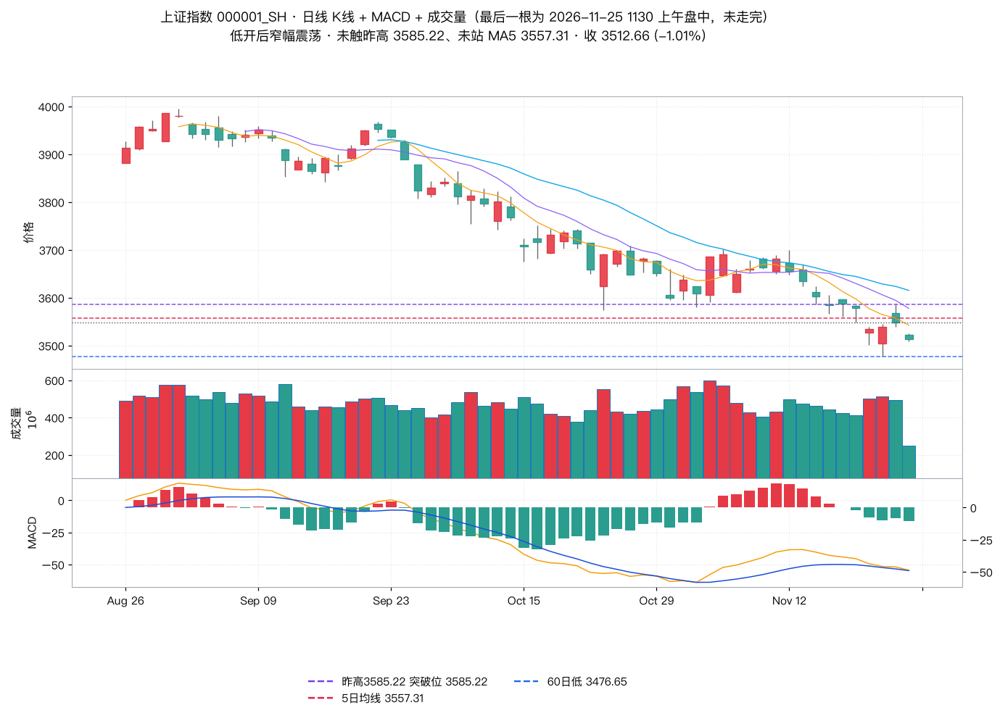
上证指数：11:30 报 3512.66，未触昨高 3585.22、未站 MA5 3557.31
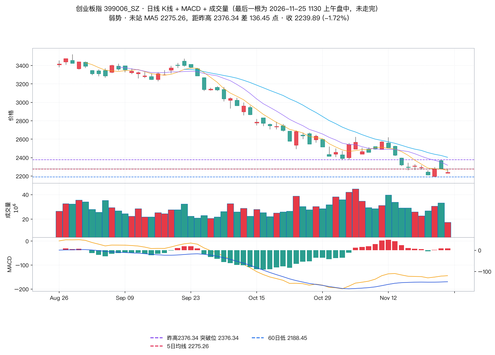
创业板指：11:30 报 2239.89（-1.72%），距昨高 2376.34 差 136.45 点
| 老师口径（11-25 午盘） | 实测（11:30） | 判定 |
|---|---|---|
| 「零售、医药、旅游酒店及食品加工制造等均有所体现，防守属性」 | 申万 L1 商贸零售 +2.55%（82 涨/15 跌）、社会服务 +1.71%、食品饮料 +1.47%、医药生物 +1.46%（354 涨/118 跌）；涨停 60 只中化学制药 10、中药 4、医药商业 2、一般零售 7 | 一致 |
| 「高股息方向的银行板块这两天略显偏弱，探底回升」 | 银行篮子 -0.65%（1 涨/4 跌）、保险 -0.57%、红利 -0.48%，工行 -1.19%、农行 -1.26%，自低点回抽但收不回 | 部分成立 |
| 「国产算力已出现补跌并且没有结束，代表品种北方华创补跌明显」 | 国产算力篮子 -1.96%（1 涨/6 跌）、半导体 -3.94%；北方华创 11:30 报 500.98（-8.44%），最低 498.02，MA5 566.68 未收复 | 一致 |
| 「人形机器人…先以弱势反弹对待」 | 机器人篮子 -4.34%、0 涨/9 跌，三花智控 -4.71%、北特科技 -6.26%，无反弹只有下跌 | 实测弱于口径 |
| 「市场活跃度不够，热点持续性没有太强保障」 | 缩量 31.93%、涨跌比 1.18:1、跌超 5% 147 只、昨涨停 55 只中 31 跌（17 只跌超 5%）、炸板 14 | 一致 |
判定词：一致 / 部分成立 / 实测弱于口径
补跌中谁更抗跌（老师给的筛选口径）：国产算力内部四川长虹 +0.53%、拓维信息 -0.75%、海光信息 -1.40% 相对抗跌；北方华创 -8.44%、常山北明 -4.62% 补跌最重。
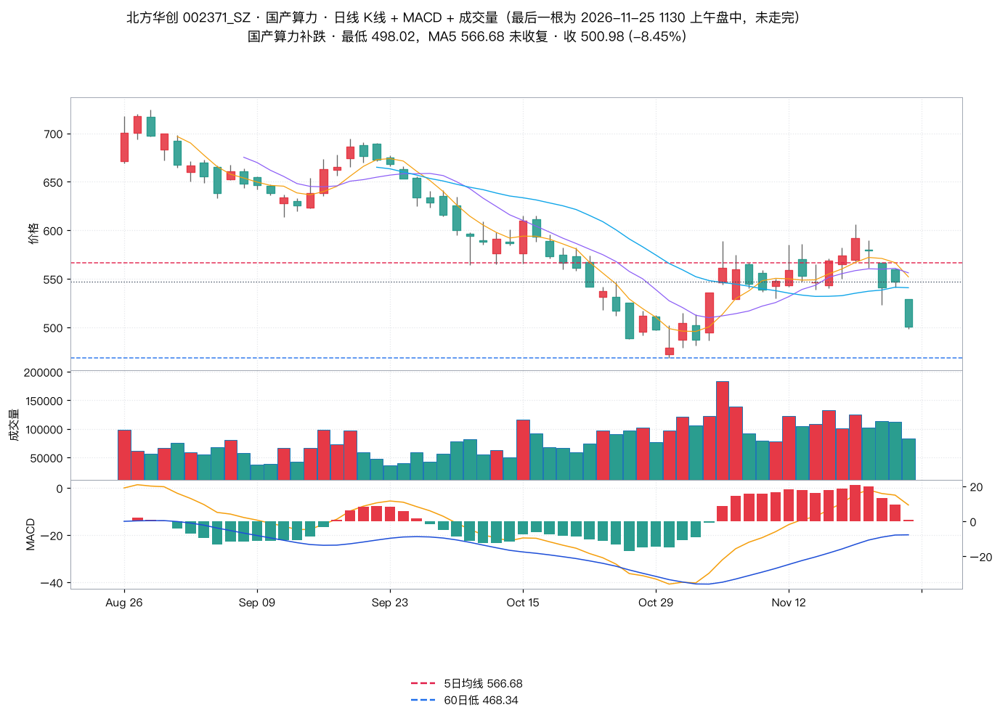
北方华创（国产算力）：11:30 报 500.98（-8.44%），最低 498.02，MA5 566.68 未收复
| 标的 | 11:30 | 老师定性 | 关键位 / 触发条件 | 实测印证 | 动作 |
|---|---|---|---|---|---|
| 康龙化成 300759 大医药 · 本期新增 | 40.44 -1.87% | 中线 · 无方法买点 | 等有力度底分型，再等 2-3 天看强势横向震荡 | 最低 39.76（-3.51%），收复 MA5 40.23 仅 +0.52% | 等 |
| 瑞芯微 603893 端侧AI | 198.29 -4.43% | 中线 · 震荡已偏弱 | 等有力度底分型 | 最低 196.16 已破 MA5 196.36，收 198.29 | 等 |
| 海天瑞声 688787 机器人 | 101.22 -3.06% | 中线 · 震荡略强 | 等有力度底分型 | 未破 MA5 94.66，收在其上方 +6.93%，池内结构最强 | 等 |
| 中国船舶 600150 船舶 | 34.89 -1.27% | 中线 · 没止跌 | 无买点 | 收 34.89 站上 MA5 34.71，但无有力度底分型 | 等 |
| 伊利股份 600887 大消费 | 33.29 +0.88% | 中线 · 不追涨 | 盯 31.95 得失：跌穿=顶背驰成立 | 最低 32.86 未破 31.95（差 0.91 元）→ 顶背驰未成立，视为强势震荡 | 等 |
| 创业板ETF 159915 创业板宽基 | 2.257 -1.53% | 中线 · 无买点 | 突破 2.392 出 15 分钟底分型三买 | 最高 2.290，距 2.392 差 0.135 | 等 |
| 兆易创新 603986 存储芯片 | 205.64 -3.23% | 短线 · 无买点 | 突破高点 229.50 出三买，或向下新低后的底背驰 | 最高 210.63，距 229.50 差 23.86 | 等 |
| 华丰科技 688629 华为概念 | 89.60 -6.81% | 短线 · 略有点补跌 | 无买点，继续观察 | 最低 87.86（-8.62%），盘中破 MA5 94.79 | 等 |
| 中芯国际 688981 国产算力 | 123.90 -2.06% | 短线 · 跌幅较小 | 等日线顶分型回调止跌后再关注 | 短线池内跌幅最小，收在 MA5 122.18 上方；最低 120.18 | 等 |
「无方法买点」为老师原文口径，不改写成可试探；实测印证只写触达事实
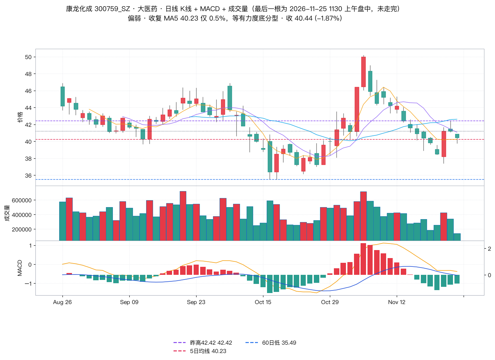
康龙化成（大医药）：11:30 报 40.44（-1.87%），等有力度底分型
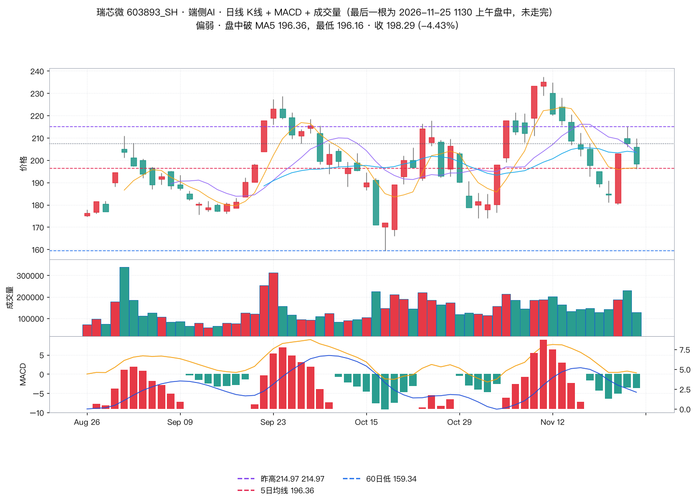
瑞芯微（端侧AI）：11:30 报 198.29（-4.43%），盘中破 MA5 196.36
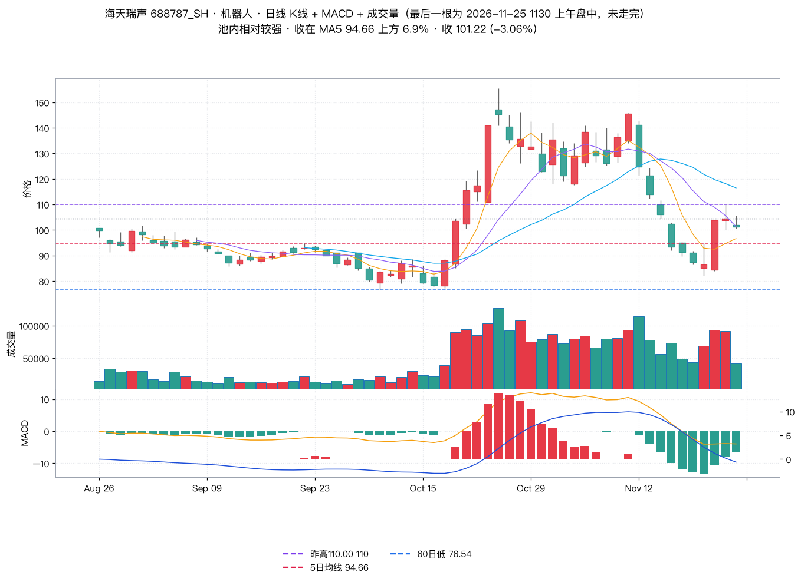
海天瑞声（机器人）：11:30 报 101.22（-3.06%），收在 MA5 上方 6.93%
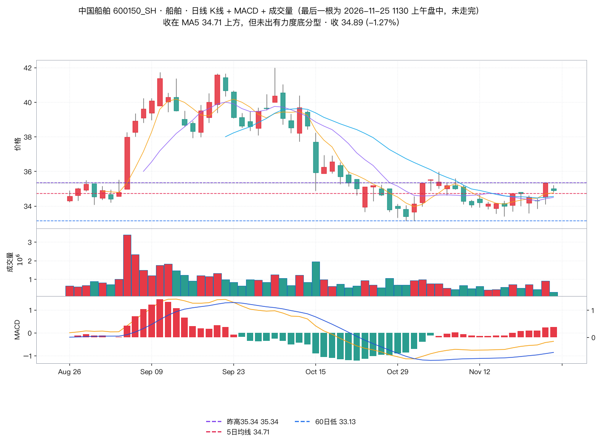
中国船舶（船舶）：11:30 报 34.89（-1.27%），收在 MA5 上方但无底分型
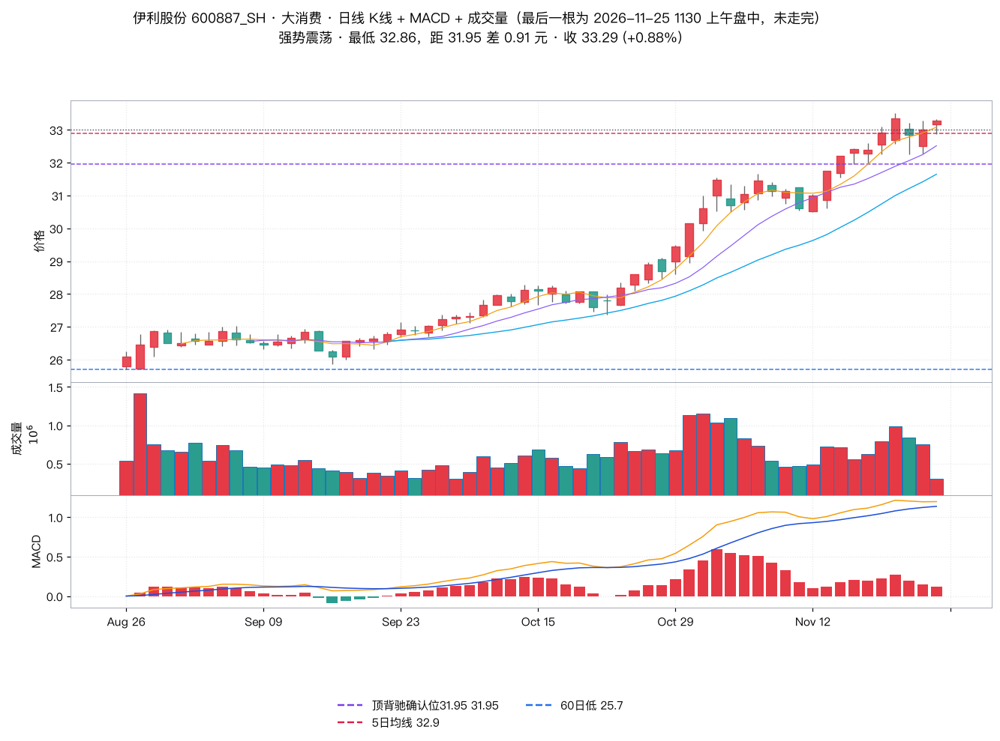
伊利股份（大消费）：11:30 报 33.29（+0.88%），最低 32.86 未破 31.95
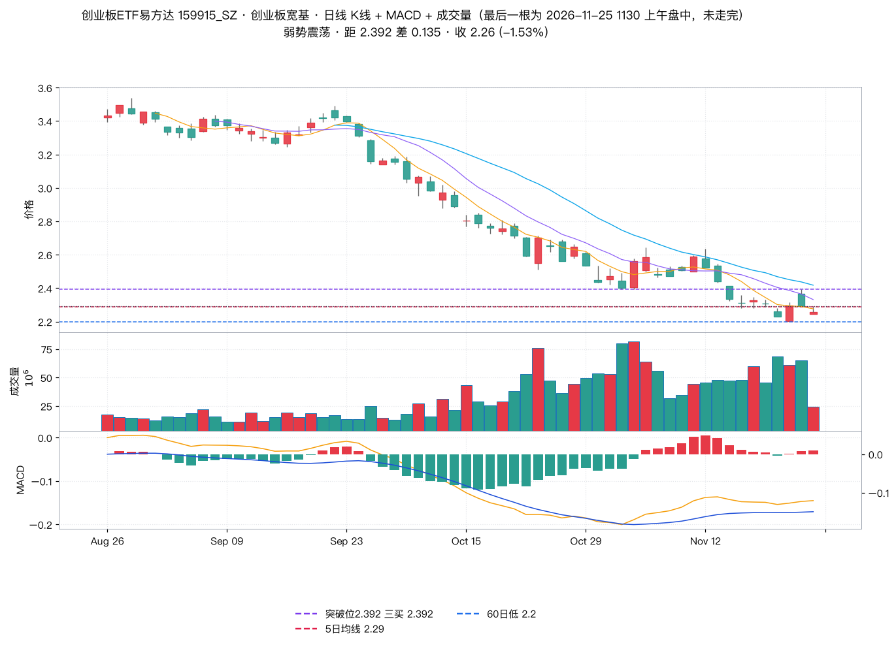
创业板ETF（创业板宽基）：11:30 报 2.257（-1.53%），距 2.392 差 0.135
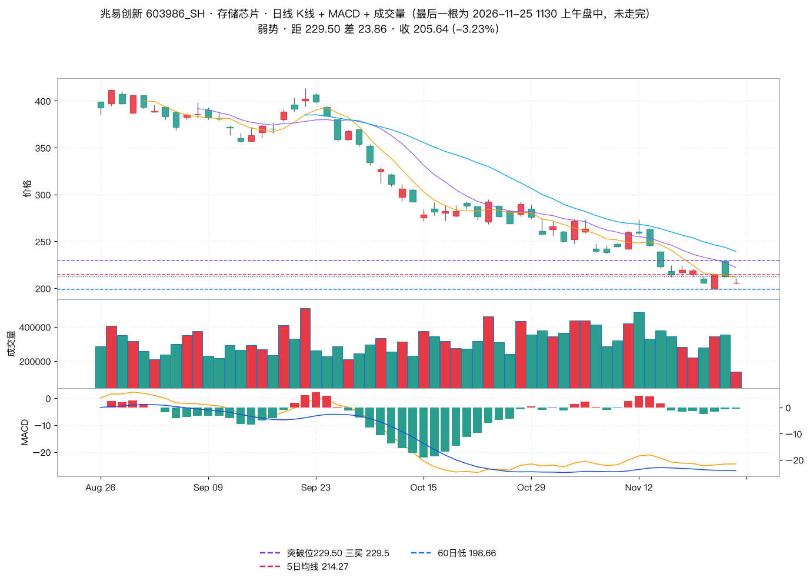
兆易创新（存储芯片）：11:30 报 205.64（-3.23%），距 229.50 差 23.86
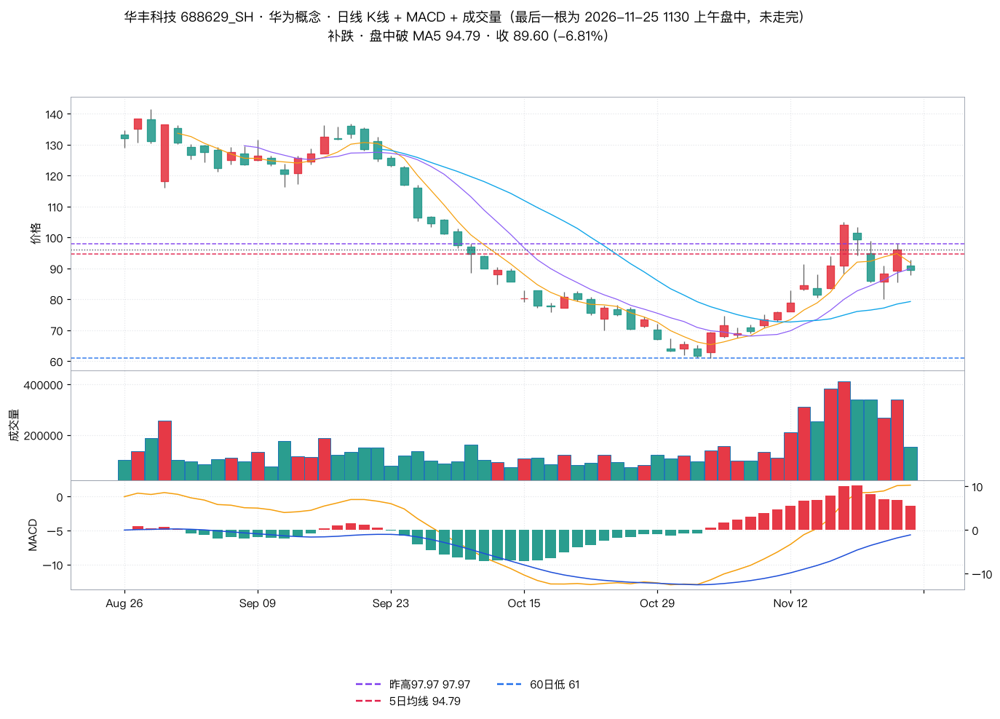
华丰科技（华为概念）：11:30 报 89.60（-6.81%），补跌
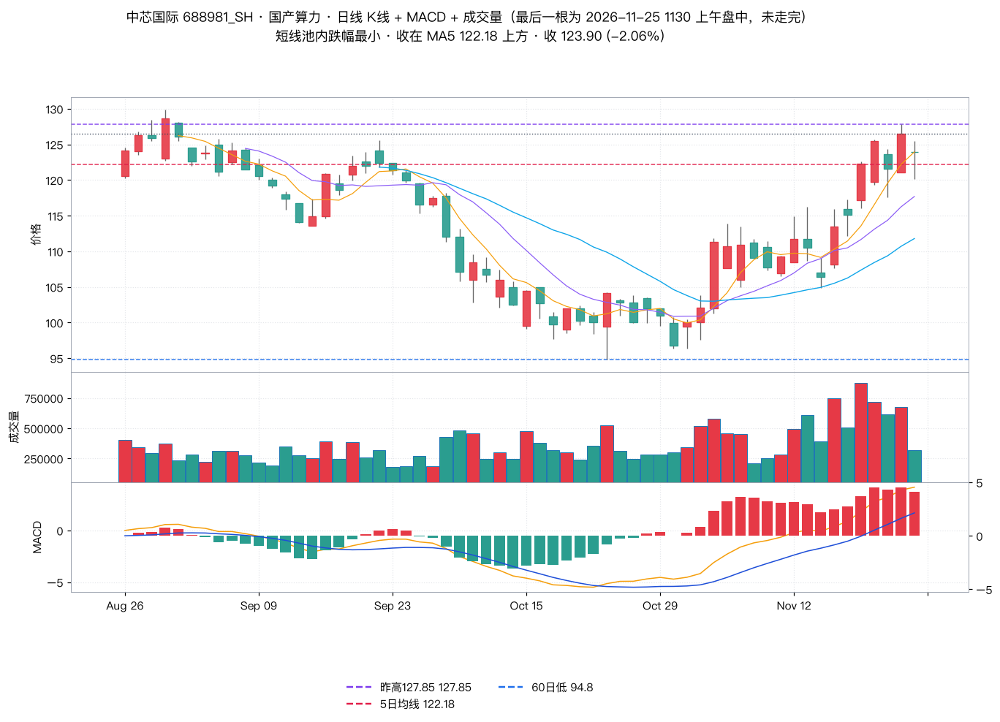
中芯国际（国产算力）：11:30 报 123.90（-2.06%），短线池内跌幅最小
| 老师口径 | 实测 | 判定 |
|---|---|---|
| 「人形机器人…先以弱势反弹对待」 | 篮子 -4.34%、0 涨/9 跌 —— 连反弹都没出现，比「弱势反弹」更弱 | 实测弱于口径 |
| 「高股息方向的银行板块这两天略显偏弱」 | 昨日 11/24 银行篮子 +0.73%，仍强于上证 +0.27%；偏弱只在今日体现 | 部分成立 |
| 「海天瑞声的震荡略强，瑞芯微和康龙化成的震荡已偏弱」 | 按收盘距 MA5 幅度：海天 +6.93% ＞ 瑞芯微 +0.98% ＞ 康龙 +0.52%，老师排序成立；但按绝对跌幅，康龙 -1.87% 最小、海天 -3.06% 居中 | 口径差异 |
| 「中国船舶走势没有止跌」 | 11:30 收 34.89 已站上 MA5 34.71（止跌三要件第 2 条满足），缺第 1 条有力度底分型，故仍不能写止跌 | 部分成立 |
| 「昨日在二类热点榜的两个板块」 | 本机无热点榜数据源；用 11/24 自建篮子核前提：国产算力 +1.32%、机器人 +3.06%，均强于上证 +0.27% | 前提成立 |
判定词：实测弱于口径 / 部分成立 / 口径差异 / 前提成立
其余判据当日一致 ✓：低开后震荡、缩量僵持、未突破昨高、不能认为见底、朝区间震荡运行、零售医药旅游食品防守、银行探底回升偏弱、国产算力补跌未结束、活跃度不足、弱势不追涨、9 只标的无方法买点、伊利股份未破 31.95、创业板ETF 与兆易创新未触关键位。
点位：腾讯「5 日分时」11:30 切片（当日未走完）；涨跌家数、申万 L1 板块、涨停/跌停/炸板池：11:30 全市场快照 5,221 只；两市成交额 = 沪 sh000001 + 深 sz399106 累计额，同比对昨同刻 11:30；MA5 / 60 日高低取 Tushare 前复权日线，11/24 篮子涨幅用 Tushare 日线复算；K 线为前复权日线 + 当日 11:30 未走完 K 线，红涨绿跌。
缠论定性（底分型、三买、底背驰、顶背驰）按老师口径引用，我方未复算，也不作为买点依据；老师原文未给总仓上限与买点，报告不代拟。
来源：都业华《高级班》午盘 2026-11-25，执业编号 A0400626100004。以上内容仅供参考，不作为买卖依据，据此操作风险自担。投资有风险，入市需谨慎。历史案例不代表未来收益。
本报告为数据核验稿，不含任何买卖建议；老师观点归属老师，判断与措辞以原文为准。